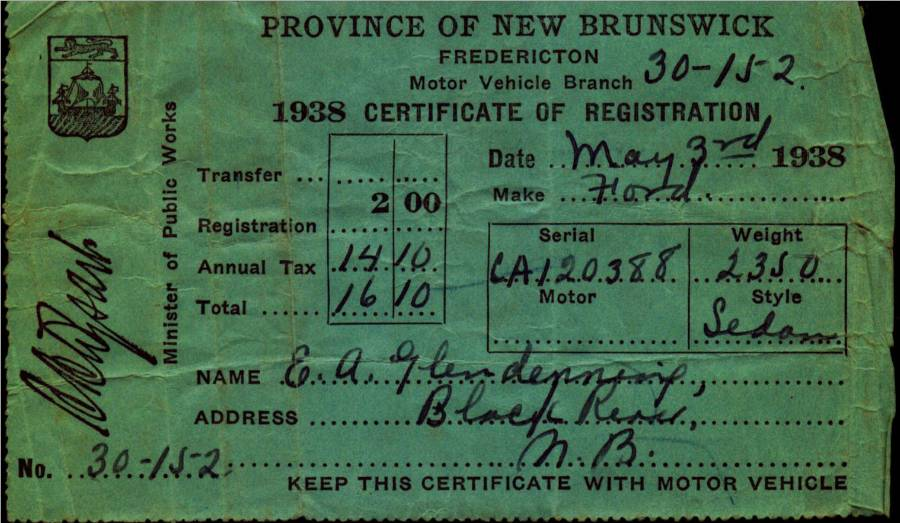

Dad purchased a Model T. Ford, year unknown, but Lillian (Weeks) Glendenning thought that he had purchased it from MacLennan’s Garage in Chatham (At the corner of the Park). Lillian remembered that the salesman let Grace tryout the car before Dad bought it. Sometime after 1931 he purchased a 1929 Model A 2-door Sedan – purchased, I believe, from the Babineau sisters (The Babineau's operated the movie theatre in Chatham.) According to both Walter and Lillian, the car was purchased on the day that Annie MacDougall died.
Walter worked with Dad cutting wood up Bay du Vin River to earn money to buy one of the cars; I cannot recall which one. Shown above are the 1928 registrations for the Model T Ford and in 1938 for the Model A. Ford Thanks to Lillian (Glendenning) Murray for access to the original documents.
The gas tank for the Model A, and perhaps for the Model T, was just in front of the windshield and gas flowed by gravity to the engine. On very steep hills, the Tabisintac for example, the car had to be turned around and driven backward up the hill. . Dad upset the Model T at Gilberts Corner, near Shediac, the day he brought Grace home from business college. The Model A sat in the old wagon shed, presumably because of the recession. Walter said that Dad allowed $2.00 worth of gas each week but I do not recall for what year. Gas pumps of the day were pumped by hand to fill a chamber at the top of the pump. The gas then flowed by gravity through the hose to the gas tank on a car.